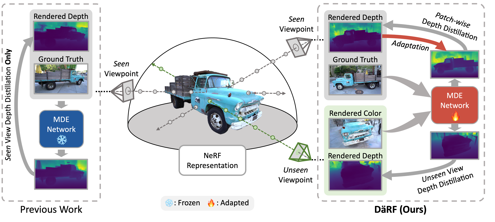

Publications

Cross-View Completion Models are Zero-shot Correspondence Estimators
Honggyu An*, Jinhyeon Kim*, Seonghoon Park, Jaewoo Jung, Jisang Han, Sunghwan Hong, Seungryong Kim
CVPR, Highlight (3.0% Acceptance Rate), 2025
Local All-Pair Correspondence for Point Tracking
Seokju Cho, Jiahui Huang, Jisu Nam, Honggyu An, Seungryong Kim†, Joon-Young Lee†
ECCV, 2024

RAIN-GS: Relaxing Accurate Initialization Constraint for 3D Gaussian Splatting
Jaewoo Jung*, Jisang Han*, Honggyu An*, Jiwon Kang*, Seonghoon Park*, Seungryong Kim
Arxiv, 2024
MaskingDepth: Masked Consistency Regularization for Semi-supervised Monocular Depth Estimation
Jongbeom Baek*,Gyeongnyeon Kim*, Seonghoon Park*,Honggyu An,Matteo Poggi, Seungryong Kim
IEEE/RSJ International Conference on Intelligent Robots and Systems (IROS), 2024
